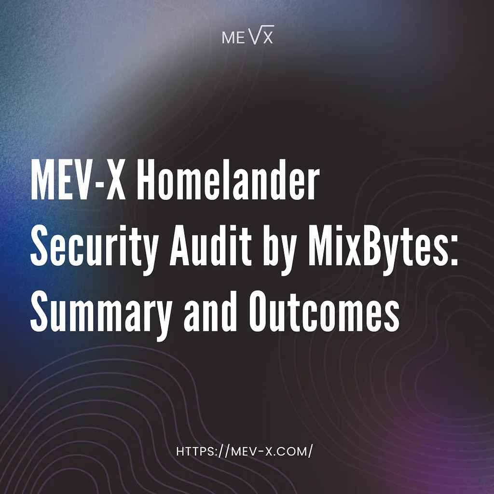

Homelander’s Uniswap v4 plugin has completed an independent security audit conducted by MixBytes. This post covers what was reviewed, what the audit found, and what the results confirm about the safety of the v4 integration specifically.

Audit Scope and Methodology
The Homelander Uniswap v4 hook implementation was audited by MixBytes through manual code review, with a focus on the correctness and safety of its on-chain logic within the Uniswap v4 execution environment. The external MEV-X stack, including the Router, Executor, and Profit Distributor, was out of scope and reviewed only through its interfaces, integration assumptions, and available documentation.
The review was structured around three project-specific attack surfaces: whether failures in any external component could travel through the hook path and cause user-facing pool operations to revert, whether incorrect operational or deployment configuration could place the integration in a state where normal user interactions degrade or revert unexpectedly, and whether a user could interfere with the arbitrage module by shaping swap parameters or influencing transaction context in a way that suppresses, breaks, or biases the intended execution path.
During the review, the auditors analyzed the hook’s execution flow across its lifecycle within the Uniswap v4 callback environment, including post-swap invocation logic, state access patterns during MEV-related execution, and control flow across the plugin’s defined logic paths. The review examined how the hook interacts with pool state after a swap completes, how execution context is forwarded to external components, and how the plugin behaves under both normal and degraded conditions.
The audit also examined access control assumptions, privilege boundaries, and administrative mechanisms governing the hook’s configuration, as well as how the contract handles failure and revert conditions at each stage of post-swap execution.
High-Level Audit Results
The audit did not identify any critical or high severity vulnerabilities in the reviewed contract. MixBytes identified three issues in the post-swap execution path, all of which were resolved before the final report was issued. The findings related to post-swap execution flow, gas handling within the hook path, and the behavior of external calls under specific conditions. None of the identified issues affected core protocol logic, user swap correctness, pool funds, or LP positions.
In particular, the audit confirms the following properties of the reviewed contract:
- The hook operates exclusively through the afterSwap callback and holds no permissions over pool state prior to or during swap execution, introducing no paths that could allow unauthorized access to or extraction of pool funds;
- Failures in the external execution stack, including the Router, Executor, and Profit Distributor, are absorbed within the hook and do not propagate into the user’s transaction or alter the swap outcome;
- When no profitable backrun opportunity is detected, the hook returns the expected callback selector and exits without affecting swap completion or requiring the transaction to revert.
Taken together, these properties describe a hook implementation in which MEV execution operates as a strictly bounded post-swap process with no influence over swap outcomes or pool state. The Uniswap v4 permission model enforces this boundary at the architecture level, and the MixBytes audit confirms that the Homelander v4 hook’s implementation respects it consistently across normal and non-ideal execution conditions.
Within the scope of the audit, the resolved findings and the absence of critical or high severity issues indicate that the Homelander Uniswap v4 plugin does not expand the protocol’s on-chain attack surface beyond its intended design. MEV capture either completes atomically within the transaction boundary or has no effect on it: in either case, the user’s swap and the pool’s integrity remain unaffected.
Execution-Level Safety Properties
Homelander’s Uniswap v4 implementation is built around a single active hook permission: afterSwap. In the Uniswap v4 architecture, hook permissions are enforced at the protocol level through the hook address itself, meaning the contract is structurally incapable of executing logic before or during a swap. By the time the hook triggers, the AMM has already finalized its state transition and the user's output is settled.
The contract operates exclusively on post-swap state and does not introduce any asset flows or authority over pool balances. All interactions with external components (route construction, backrun execution, and profit distribution) occur after swap accounting is complete and within the same transaction boundary. No step in this process is observable from outside the transaction or exposed to the public mempool.
The MixBytes audit specifically tested the resilience of this execution model under adversarial conditions, including scenarios where users attempt to interfere with the arbitrage path through gas manipulation. The fixes applied during the audit ensure that the fail-open behavior holds consistently: when MEV execution does not complete for any reason, the hook exits cleanly and the transaction proceeds as if the hook were not present.
For this audit we worked with MixBytes, a smart contract security firm with extensive experience and a strong reputation in the space. Working with the MixBytes team was a productive experience: the review process was thorough and iterative, with findings addressed across multiple rounds and re-audited.
We would like to thank the MixBytes team, Areta, and the Uniswap Foundation Security Fund for making this audit possible. The full audit report is available here.
For a deeper look at Homelander’s mechanics, check the documentation and our earlier publications (I/II/III). If you’d like to explore an integration or partnership, you can reach us on Telegram.